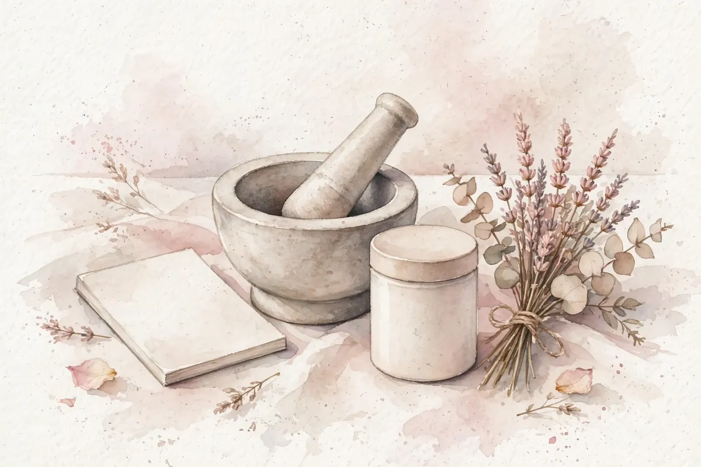
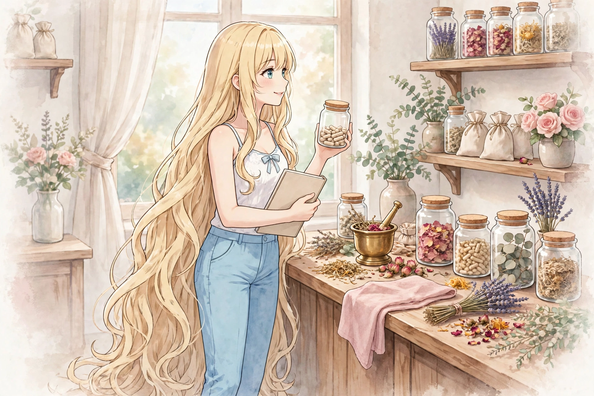

トップ ＞ インナーケア・サプリ ＞ 薬を飲んでいる時の相談先の考え方
薬を飲んでいる時の相談先の考え方

薬を日常的に飲んでいる方がサプリメントを考えるとき、「誰に聞けばいいのか」で迷うことがあります。この記事では、個別の判断ではなく、相談先の考え方を一般的な案内として整理します。具体的な可否は、必ず専門家の判断を仰いでください。
基本は「始める前に相談」
服薬中の場合、サプリメントは自己判断で始めないことが基本です。サプリメントは食品ですが、飲んでいる薬との関係は、個人の状況によって確認が必要な場合があります。気になる商品を見つけたら、買う前に相談する。この順番が大切です。
すでに飲んでいるサプリメントがある方も、薬が変わったときや、新しく薬が増えたときは、あらためて相談する機会と捉えてください。
相談先は、かかりつけ医と薬剤師
相談先の中心は、処方を受けているかかりつけの医師と、薬を受け取っている薬局の薬剤師です。薬剤師は、薬の専門家として、日常的に相談を受け付けています。処方薬を受け取るタイミングで「このサプリメントを考えているのですが」と声をかけるだけでも構いません。
お薬手帳は、飲んでいる薬を正確に伝えるための道具です。相談のときは手帳を持参し、サプリメントについても手帳にメモしておくと、次の相談のときに話が早くなります。
相談のときに持っていくもの
相談を具体的にするためには、商品の情報を持っていくのが有効です。パッケージそのもの、または原材料名・含有量・目安量が写った写真があると、専門家が表示を見て判断できます。「何か分からないけれど聞いてみた」という相談より、表示を一緒に見てもらう相談の方が、確かな答えが返ってきます。
販売店への問い合わせは、商品の表示や価格、手続きについての確認には使えますが、医療に関わる判断は販売店ではできません。聞く内容によって、相談先を使い分けることが大切です。
相談すること自体を、重く考える必要はありません。薬局の薬剤師への相談は、処方薬の受け取りのついでにできる、日常的なものです。ドラッグストアの薬剤師や登録販売者も、商品の表示についての相談先になります（医療に関わる判断は、医師や薬剤師の領域です）。「こんなことで聞いていいのか」と遠慮するより、始める前に一言確認する方が、結果として安心して続けられます。相談した内容は、お薬手帳や手帳のメモに残しておくと、次回の診察や相談のときに話がつながります。相談先を知っていること自体が、サプリメントとの付き合い方の土台です。
この記事は相談先の一般的な案内であり、個別の判断をするものではありません。服薬中の方のサプリメントの使用については、医師・薬剤師等の専門家にご相談ください。

セラフィナ「服薬中は、買う前に相談が先。表示の写真とお薬手帳を持っていくのがコツだね」